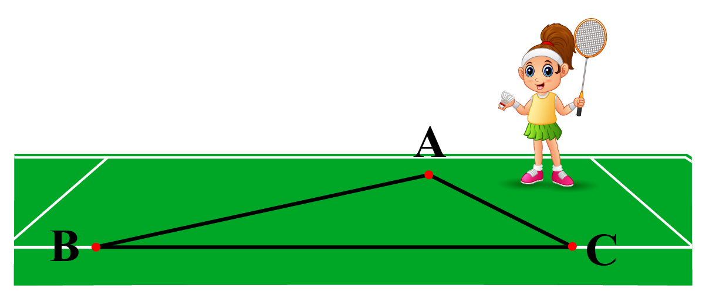

A geometric explorer, Alex, is working on classifying different sets of three line segments. Given three lengths, Alex wants to determine whether they can form a valid triangle. Your task is to help Alex by implementing a program that checks the triangle inequality theorem.A valid triangle can be formed if and only if the sum of any two sides is greater than the third side. Your task is to determine whether the given numbers satisfy this condition.
You are given as input three integers, a, b, and c (-100 ≤ a,b,c ≤ 100).
A single line stating whether the numbers form a triangle or
not. If the numbers form a valid triangle, print (a, b, c) defines a triangle. Otherwise, print (a, b, c) cannot define a triangle.
Input 1
3 4 5
Output 1
(3, 4, 5) defines a triangle
Input 2
0 0 0
Output 2
(0, 0, 0) cannot define a triangle